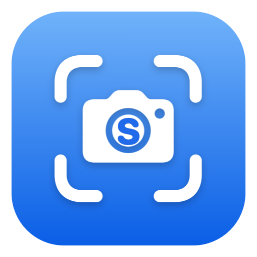

Region & window capture
Drag-select any area with a magnifier loupe and live pixel readout, or click a window to grab it whole. Return recalls the last selection.

A local-first, native macOS capture and recording utility. Capture, preview, annotate, and drag out — without ever leaving the app you're in.
macOS 14.4+ · Apple Silicon · No cloud, no account, no telemetryCapture → floating preview → act. The screen freezes the instant you press the shortcut, so what you select is exactly what you get.
Drag-select any area with a magnifier loupe and live pixel readout, or click a window to grab it whole. Return recalls the last selection.
Record a region or window with system and microphone audio, click highlights, and keystroke overlays. A floating bar to pause, resume, and stop.
Arrows, shapes, freehand, wrapping text, blur and pixelate, numbered step badges, crop with aspect snapping, undo/redo — all at 60 fps on a 5K image.
Captures a region while the page scrolls and stitches it into one tall image. It measures motion and fixed chrome rather than assuming — floating buttons stay out of the result.
Select a region and extract its text — English, Chinese, Vietnamese, Korean and more. Or click any pixel on screen to copy its hex, RGB, or HSL value.
Every capture, searchable, with thumbnails and non-destructive re-editing. Beautify adds an automatic background, shadow, and rounded-corner treatment.
The things Snapper deliberately does not do are as important as the things it does.
Under 120 ms from hotkey to visible thumbnail. Capture-to-preview feels immediate.
No capture action activates the app or moves you out of your current window.
No upload, no share links, no hosting, no account system. Your captures stay on your Mac.
No analytics, no crash reporting network calls, no monetization logic. Nothing phones home.
Snapper is built and run locally — no App Store, no notarization. You'll need Xcode 16+ and macOS 14.4 or later on Apple Silicon.
Clone the Snapper repository to your Mac.
xcodebuild -project snapper.xcodeproj -scheme snapper -configuration Release build
Copy the built snapper.app from DerivedData into /Applications.
Open from Finder or Spotlight, then allow Screen Recording, Microphone, and Accessibility as prompted.